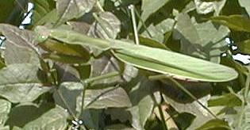
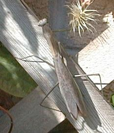
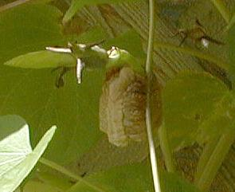

The praying mantids in the midwest are comprised of three species. The European praying mantid, Mantis religiosa, was introduced to the New York area in early 1900's. This is a rather small mantid, measuring only 47 to 56 mm (1.5 to 2.5 inches). The Chinese mantid, Tenodera aridifolia sinensis was introduced near Philadelphia, and has spread throughout the midwest area. It is much larger at 70 to 104 mm (3 to 5 inches). The Carolina mantid, Stagmomantis carolina, is our native species and occurs in the southern portions of Ohio, Indiana, and Illinois.
These are slender insects with raptorial forelegs specifically designed for grasping unsuspecting prey. In my garden, the Chinese mantid may be all green as shown in the photo below.

Or, it may be green with brown wing covers, or it may be all brown as shown in the photo below.

Mantids delelop through gradual metamorphosis with egg, nymph, and adult stages. They overwinter in the egg stage. Adult mantids mature by late summer and will survive until they succumb to the frost and cold weather in late fall and early winter. Egg masses are deposited by early fall on any convenient surface as shown in the photo below.

Egg mass on Ipomoea albaIn late spring, the young mantids emerge from their egg mass and begin their search for food. The nymphs are highly carnivorous, even cannibalistic under crowded conditions, and will eat any other type of insect they can grab. They usually wait motionless for their prey to get within grabbing distance, but are known to stalk their prey when exceptionally hungry. Their eyesight is very well developed, and when focused on you, will appear to follow every movement you make.
They appear to be fearless. When approached, they rear up on their back pairs of legs and partially raise their wings in a threatening manner. The mating behavior is a bit bizarre in that the male is usually eaten before the mating act is completed.
Mantids favor areas with abundant vegetation with high insect populations (like my gardens, for example.) They are highly beneficial as predators of noxious insects, but their actual value may be overrated because their feeding habits are non-selective, i.e., they are as likely to eat your pollinators as any other insect.
Fascinating to watch, and very educational for your garden visitors, I recommend that you keep a watchful eye for them and protect their egg masses from destruction when cleaning up the garden in the fall and again in the spring. They are not really smart enough to deposit their eggs in woody plants which are less likely to be disturbed by the gardener.
I regard the naturally occurring presence of many mantids to be the mark of success for any recreational gardener.
Return to Index